Nicolás y Román
Nicolás y Román
Publicidad con otra vuelta.
Marca, anuncios y web para negocios chicos de Uruguay. Te contestamos nosotros dos.
Escribinos por WhatsAppBajá
Nicolás y Román
Marca, anuncios y web para negocios chicos de Uruguay. Te contestamos nosotros dos.
Escribinos por WhatsAppAcá sigue la página.